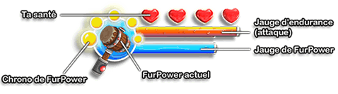

Santé
La santé détermine le nombre de coups que peut encaisser ton Furball.
Jauge d'endurance
Cette jauge indique ton niveau actuel d'endurance.
L'exécution d'attaques nécessite de l'énergie physique, c'est pourquoi des attaques répétées épuiseront rapidement ton Furball. Vérifie donc toujours que tu as assez d'endurance avant de foncer tête baissée vers l'ennemi. L'endurance se régénère automatiquement lorsqu'elle n'est pas sollicitée.
Jauge de FurPower
Cette jauge indique le niveau actuel d'énergie divine de ton Furball. Cette énergie est nécessaire pour que ton Furball puisse faire appel à ses FurPowers comme Super vitesse ou Force brute.
Pour restaurer la jauge de FurPower, tu dois manger des Baies rouges.
ASTUCE : Si jamais tu venais à manquer de FurPower à un moment critique, n'hésite pas à revenir sur tes pas pour chercher un buisson à Baies rouges. Ces fruits repoussent à une vitesse incroyable !
Icône de FurPower
Cette icône représente la quantité de FurPower disponible pour ton Furball.